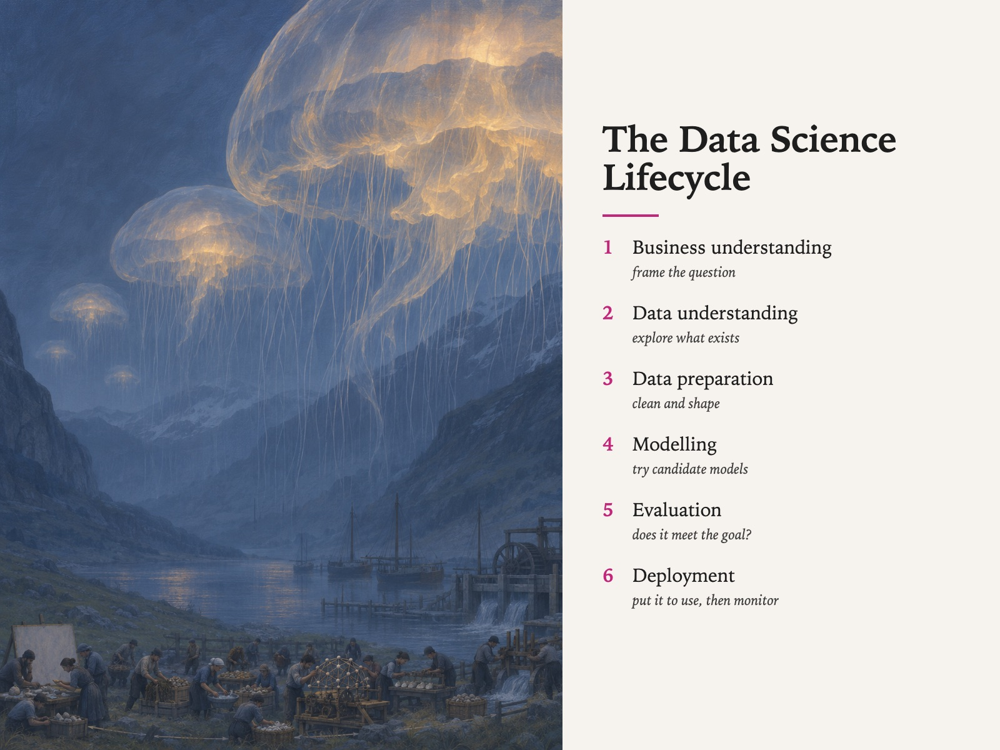

Style Vault / Gallery / Leviathan Weather
Leviathan Weather
SV-067

Example: The data science lifecycle, set in Leviathan Weather
In plain words
An enormous soft glowing creature, like a jellyfish or whale, drifting over an ordinary place - a pasture, a car park, a harbour - while the people below keep working and nobody looks up. It is painterly and dreamy, but also funny in a dry way. What makes it this style is that the creature is the only light, and nobody reacts to it. Best for: change nobody notices; culture stories about routine; personal essays on wonder; workshop prompts on blind spots. Avoid: text or lettering generated inside the image.
Topics it fits
- Change nobody noticesa vast glowing thing ignored by busy people shows how big shifts like AI arrive while everyone keeps working
- Culture stories about routineawe on one side and a nap on the other captures the gap between headlines and daily work
- Personal essays on wonderthe dreamlike creature over a dull place gives a reflective post its central image
- Workshop prompts on blind spotsasking why nobody looks up turns the picture into a discussion about what teams fail to see
Art style and layout
- core locked [organism_is_the_only_light, nobody_looks_up, translucent_soft_body, one_warm_accent_emitted_only, human_life_in_the_bottom_tenth, painterly_not_rendered]
- the tension awe on one axis, a nap on the other. The picture contains the most extraordinary thing a person could see and the correct local response is to keep grazing the sheep. If a single figure gazes upward in wonder, the card dies instantly and becomes a film poster
- nobody looks up THE CARD, and the first thing a model will break - its reflex is the awestruck-witness shot. Say "going about ordinary business and NOT ONE of them looking up" every time. Better still, give them a task: shearing, loading, sweeping, hanging washing, asleep
- organism is the only light every warm value in the frame comes from inside a bell. No sun, no moon, no windows, no torches, no campfire. The moment a second warm source appears the creatures stop being the event
- translucent soft body you must be able to see landscape *through* the bell. Say translucent, say membrane, say the far mountain visible through it. An opaque creature reads as a balloon or a spaceship
- human life in the bottom tenth people and animals are small, numerous and busy, pressed along the lower edge. They are not the subject and they are not a silhouette hero - they are set dressing with jobs
- painterly not rendered visible brushwork, soft edges, atmosphere over detail. Photoreal rendering turns it into a VFX plate and the fairytale register evaporates
- palette [night sky "#24456E, deep valley shadow "#16263D, mid slate rock "#2E4A6B, haze blue "#5E7FA3, membrane pale "#C7D9EA, bell glow "#F2D9B8 with core "#E8C79A]
- negative space the empty blue sky in the top third and the haze corridor down the middle. Both load-bearing - crop them and the creatures lose the scale they only have by comparison
- era reference romantic sublime landscape painting crossed with contemporary painterly concept art and natural-history illustration of deep-sea fauna. Do not name a living artist
What must stay, what may change
setting - ONE locked organism drifting over ten far-apart ORDINARY WORKING PLACES (a sheep pasture, a motorway service-station forecourt, a rice terrace, a container yard, a suburban cul-de-sac, a quarry, a fishing harbour at dawn, a school playing field, a construction site, a washing line strung between apartment blocks). Deliberately NOT a subject sweep - see the field note. Ten sea creatures would be a one-family set and would sweep the wrong variable: the card is about the indifference, and indifference needs people doing something ordinary. The organism, the palette, the scale and the light stay locked verbatim; only the place underneath moves
As JSON
Paste this into a prompt or a skill to reuse the style.
{
"id": "SV-067",
"name": "Leviathan Weather",
"audience": [
"gallery"
],
"category": [
"illustration-painting"
],
"format": [
"illustration",
"poster"
],
"maker": "diffusion",
"keep_and_swap": "**setting - ONE locked organism drifting over ten far-apart ORDINARY WORKING PLACES** (a sheep pasture, a motorway service-station forecourt, a rice terrace, a container yard, a suburban cul-de-sac, a quarry, a fishing harbour at dawn, a school playing field, a construction site, a washing line strung between apartment blocks). **Deliberately NOT a subject sweep** - see the field note. Ten sea creatures would be a one-family set and would sweep the wrong variable: the card is about the indifference, and indifference needs people doing something ordinary. The organism, the palette, the scale and the light stay locked verbatim; only the place underneath moves",
"style_dna": {
"core_locked": "[organism_is_the_only_light, nobody_looks_up, translucent_soft_body, one_warm_accent_emitted_only, human_life_in_the_bottom_tenth, painterly_not_rendered]",
"the_tension": "**awe on one axis, a nap on the other.** The picture contains the most extraordinary thing a person could see and the correct local response is to keep grazing the sheep. If a single figure gazes upward in wonder, the card dies instantly and becomes a film poster",
"nobody_looks_up": "THE CARD, and the first thing a model will break - its reflex is the awestruck-witness shot. **Say \"going about ordinary business and NOT ONE of them looking up\" every time.** Better still, give them a task: shearing, loading, sweeping, hanging washing, asleep",
"organism_is_the_only_light": "every warm value in the frame comes from inside a bell. No sun, no moon, no windows, no torches, no campfire. The moment a second warm source appears the creatures stop being the event",
"translucent_soft_body": "you must be able to see landscape *through* the bell. Say translucent, say membrane, say the far mountain visible through it. An opaque creature reads as a balloon or a spaceship",
"human_life_in_the_bottom_tenth": "people and animals are small, numerous and busy, pressed along the lower edge. They are not the subject and they are not a silhouette hero - they are set dressing with jobs",
"painterly_not_rendered": "visible brushwork, soft edges, atmosphere over detail. Photoreal rendering turns it into a VFX plate and the fairytale register evaporates",
"palette": "[night sky \"#24456E, deep valley shadow \"#16263D, mid slate rock \"#2E4A6B, haze blue \"#5E7FA3, membrane pale \"#C7D9EA, bell glow \"#F2D9B8 with core \"#E8C79A]",
"negative_space": "the empty blue sky in the top third and the haze corridor down the middle. Both load-bearing - crop them and the creatures lose the scale they only have by comparison",
"era_reference": "romantic sublime landscape painting crossed with contemporary painterly concept art and natural-history illustration of deep-sea fauna. **Do not name a living artist**"
},
"elements": {
"subject": "**colossal translucent sea-organisms drifting in air**, at architecture scale, in a real terrestrial landscape. Never underwater, never an alien planet, never a spaceship. The thing must be recognisably a living soft-bodied animal",
"composition": "**the nearest organism is huge and cropped by the frame edge**; three to five more recede in a diagonal into haze. Human life is confined to the **bottom tenth** and is small, busy and unimpressed. Land masses frame both sides like a valley or a street",
"light": "**the organisms are the only light source**, glowing from inside the bell in warm pale gold. Everything else is unlit blue dusk. **No key light, no rim light on any person** - same inversion as SV-061: the living human is the unlit thing",
"palette": "deep desaturated night blue and slate end to end, with **warm pale gold as the single accent, emitted from inside the creatures and nowhere else**. No magenta, no cyan, no green glow, no neon",
"material/texture": "**translucency is the medium.** The bell reads as wet membrane - you can see the far mountain through it. Painterly visible brushwork, soft edges, atmospheric haze doing the depth work, no hard rendering, no chrome, no gloss",
"mood": "**sublime and completely undramatic.** Nobody is fleeing, nobody is pointing, nothing is exploding. The register is a weather event that happens every year",
"camera/render": "wide painterly landscape still, eye-level from the ground among the people, deep planes, gentle bloom off the bells only, slight canvas grain"
},
"palette_hex": [
"#24456e",
"#16263d",
"#2e4a6b",
"#5e7fa3",
"#c7d9ea",
"#f2d9b8"
],
"topics": [
{
"topic": "Change nobody notices",
"why": "a vast glowing thing ignored by busy people shows how big shifts like AI arrive while everyone keeps working"
},
{
"topic": "Culture stories about routine",
"why": "awe on one side and a nap on the other captures the gap between headlines and daily work"
},
{
"topic": "Personal essays on wonder",
"why": "the dreamlike creature over a dull place gives a reflective post its central image"
},
{
"topic": "Workshop prompts on blind spots",
"why": "asking why nobody looks up turns the picture into a discussion about what teams fail to see"
}
]
}